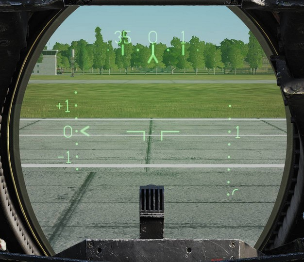
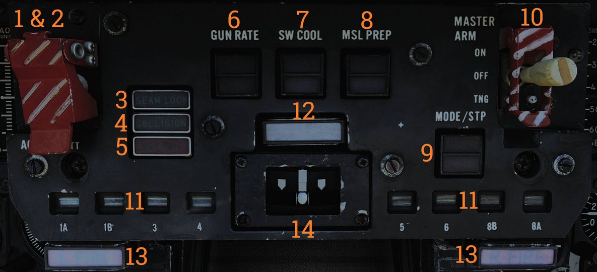
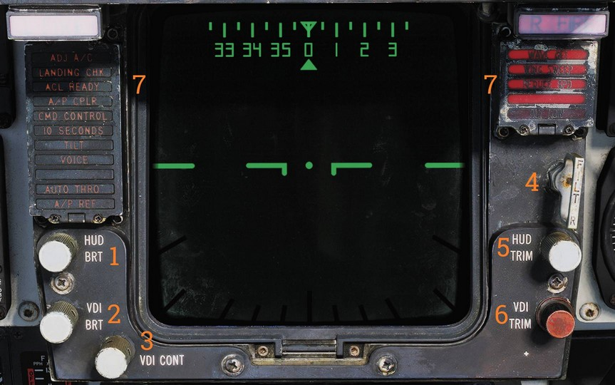
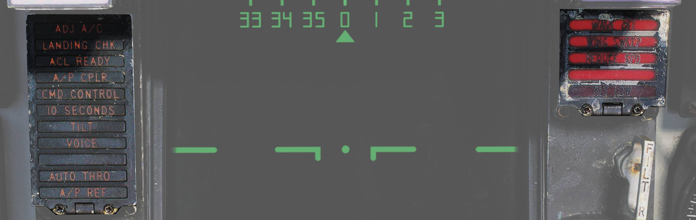

Center Panel
Heads-Up Display

The heads-up display (HUD) projects flight and weapon delivery information onto the forward portion of the canopy/windscreen.
Night mode is selected using the control on the right side of the VDI.
Two engine stall warning lights, L STALL and R STALL, are mounted on the left and right sides of the HUD, respectively. Each light indicates an engine stall condition in the corresponding engine.
💡 For more information see relevant chapters under Navigation and Weapons and Weapons Employment Overview.
Cockpit Television Sensor (CTVS)

The cockpit television sensor (CTVS) records the HUD for registration of weapons delivery.
💡 Currently not implemented in DCS.
Air Combat Maneuver Panel

Main pilot armament control panel.
ACM Switch/Cover
The ACM (Air Combat Maneuver) switch/cover (
ACM Jettison Button
The ACM JETT button (
Sidewinders are not jettisoned even if selected.
SEAM Lock Light
The SEAM LOCK light (
The light illuminates during the 4.5-second SEAM acquisition attempt and remains illuminated if the seeker locks onto a target.
Collision Light
The COLLISION light (
Hot Trigger Light
The HOT TRIG light (
Gun Rate Pushbutton
Toggle pushbutton with light indication (
- HIGH - Selects 6,000 rounds per minute. Normally used for air-to-air operation.
- LOW - Selects 4,000 rounds per minute. Normally used for air-to-ground operation.
The gun rate is automatically set to HIGH when ACM mode is selected.
Sidewinder Cooling Pushbutton
Toggle pushbutton with light indication (
Sidewinder cooling is automatically set to ON when ACM mode is selected.
Missile Preparation Pushbutton
Toggle pushbutton with light indication (
Missile preparation is automatically set to ON when ACM mode is commanded.
Missile Mode Pushbutton
Toggle pushbutton with light indication (
- NORM - Normal missile launch mode.
- BRSIT - Boresight missile launch mode.
Controlled by the WCS when in ACM mode.
Master Arm Switch
The MASTER ARM switch (
- OFF - Disables electrical power to release circuitry.
- ON - Enables electrical power to release circuitry. Position is locked until the master arm cover is lifted.
- TNG - Enables in-flight training mode.
💡 The MASTER ARM bus is interlocked with the landing gear control lever, disabling all releases except emergency jettison while the gear is down.
💡 ACM jettison and emergency jettison are not disabled by MASTER ARM.
Station Status Flags
Station status flags (
- BLACK - Station not loaded or weapon not ready.
- WHITE - Station and weapon ready.
- CHECKERBOARD - Weapon selected and ready for launch. While on the ground, this indicates fuselage rails are up and locked and that loaded weapons are armed.
Master Caution Light and Button
The MASTER CAUTION light and reset button (
Press to acknowledge and extinguish the light until the next event.
Engine Fire Warning Lights
The L FIRE and R FIRE lights (
Turn-and-Slip Indicator
The turn-and-slip indicator (
The upper section contains an electrically driven pointer, where one needle deflection corresponds to a 360° turn in four minutes. The lower section contains an inclinometer with a ball suspended in damping fluid.
Vertical Display Indicator (VDI)

The vertical display indicator (VDI) complements the HUD by displaying flight and weapon information.
💡 The VDI has a red night filter that can be installed by clicking in the middle of the VDI screen.
HUD Brightness Control
The HUD BRT control (
VDI Brightness Control
The VDI BRT control (
VDI Contrast Control
The VDI CONT control (
Filter Handle
The FILTER handle (
HUD Trim Control
The HUD TRIM control (
VDI Trim Control
The VDI TRIM control (
VDI Caution Lights

VDI-mounted caution lights (
| Indicator | Function |
|---|---|
| ADJ A/C | Advisory light indicating other aircraft close to own traffic pattern. |
| LANDING CHK | Advisory light indicating carrier has a channel ready for ACL and that the crew should prepare for carrier landing. |
| ACL READY | Warning light indicating CATCC has acquired the aircraft and is transmitting glidepath information to the aircraft. |
| A/P CPLR | Warning light indicating CATCC is ready to control the aircraft. |
| CMD CONTROL | Warning light indicating the aircraft is under data link control for landing. |
| 10 SECONDS | Warning light indicating that carrier motion is added to data link info and commands during landing. Indicates 10 seconds to arrival at the next point in approach pattern in other modes. |
| TILT | Warning light indicating no data link command received for the last 2 seconds during ACL. When not in ACL, it indicates no data link messages during the last 10 seconds. |
| VOICE | Warning light indicating CATCC not ready for ACL, switch to standard voice procedures. |
| A/P REF | Warning light indicating autopilot selected but not engaged. Exception: altitude and heading hold. |
| WAVEOFF | Warning light indicating waveoff commanded. |
| WING SWEEP | Warning light indicating failure in both wing-sweep channels or disengagement of spider detent. |
| REDUCE SPEED | Warning light indicating flap retraction failure with greater than 225 knots indicated airspeed. Also indicates safe Mach number exceeded. |
| ALT LOW | Non-functional, light on radar altimeter is used instead. |
Horizontal Situation Display Indicator (HSD)

The horizontal situation display (HSD) displays navigational information to the pilot and can repeat the RIO’s TID.
HSD Brightness Control
The BRT control (
Heading Bug Control
The HDG control (
Course Control
The CRS control (
Test Button
The TEST button (
BIT Indicator
The BIT indicator (
💡 For more information see relevant chapters under Navigation and for the TID repeat Tactical Information Display (TID) and Associated Controls.
Cabin Pressure Altimeter

Displays cabin pressure in 1,000-foot increments from 0 to 50,000 feet.
Emergency Brake Pressure Indicator

Displays hydraulic pressure available from the emergency brake accumulators to the auxiliary and parking wheel brake systems.
Parking Brake Pressure
The PARK indication shows brake pressure available for parking brakes.
The green segment indicates 2,150 to 3,000 psi and the red segment indicates 1,900 to 2,150 psi. When in the green, sufficient pressure is available for approximately three brake applications.
Auxiliary Brake Pressure
The AUX indication shows brake pressure available for the auxiliary brake system, usable via toe brakes.
The green segment indicates 2,150 to 3,000 psi (approximately 13 to 14 applications) and the red segment indicates 1,900 to 2,150 psi (approximately five applications).
Control Stick

The control stick provides aircraft roll and pitch control and contains additional weapon and aircraft control functions.
Bomb Release Button
The bomb release button (
Pitch and Roll Trim Hat
The pitch and roll trim hat (
Up/down commands pitch trim and left/right commands roll trim.
Weapon Select Hat
Selector hat (
- SP or PH - Selects AIM-7 or AIM-54. Depression toggles between types.
- SW - Selects AIM-9. Depression toggles between stations.
- GUN - Selects M61A1 Vulcan gun.
- OFF - Inhibits weapon release.
DLC and Maneuver Flap Command Wheel
The DLC and maneuver flap command wheel (
With DLC engaged, forward rotation extends spoilers and aft rotation retracts spoilers.
With flaps up and DLC disengaged, forward rotation retracts maneuvering flaps/slats and aft rotation extends them.
The control logic is that pulling the wheel toward the pilot increases lift and pushing it away decreases lift.
DLC Engage/Disengage and Countermeasure Dispense Button
The DLC engage/disengage and countermeasure dispense button (
With flaps up, this button commands the ALE-39 to dispense chaff or flares per RIO settings.
DLC disengages with another momentary press, raising flaps, or advancing either throttle to MIL.
Autopilot Reference and Nosewheel Steering Button
The autopilot reference and nosewheel steering button (
With weight off wheels, it engages enabled autopilot modes.
Autopilot Emergency Disengage Paddle
The autopilot emergency disengage paddle (
With weight on wheels, it additionally reverts throttle mode to MAN (manual) while depressed.
Weapon Firing Trigger
The weapon firing trigger (
The first detent enables CTVS and gun camera. The second detent releases the selected forward-firing weapon.
💡 CTVS and gun camera are not implemented in DCS.